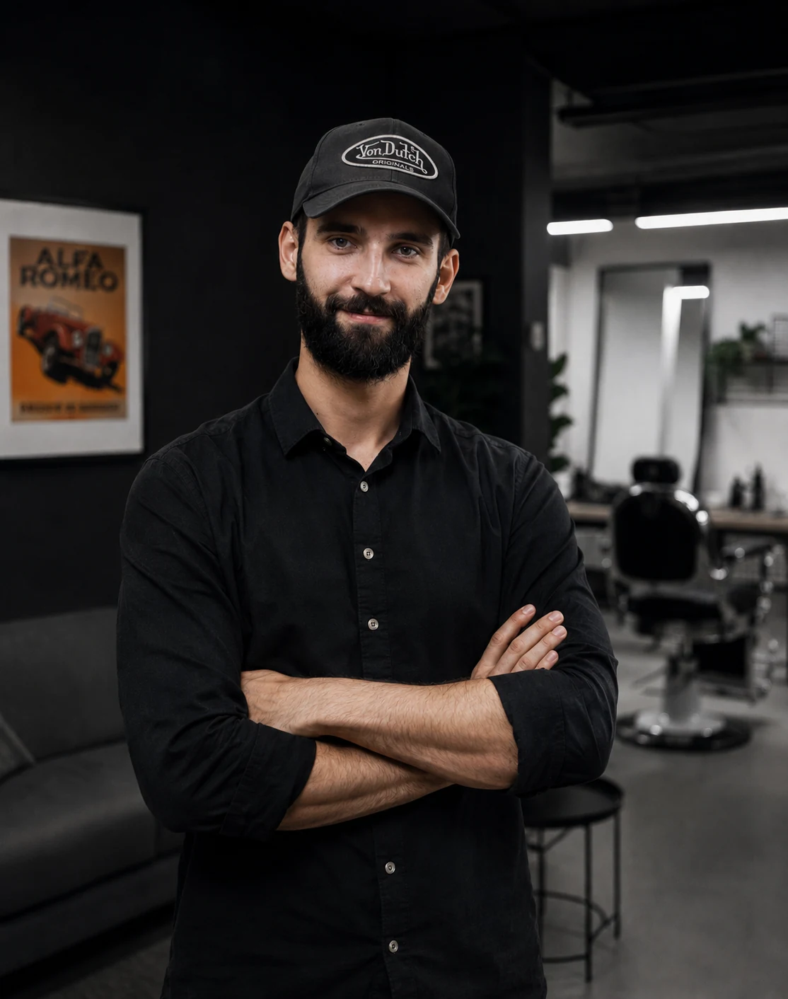

Ieslodzījuma laikā
Apgūt profesiju
Drošs darbs ar instrumentiem, higiēna, klientu apkalpošana un praktiskas barbera iemaņas.
Biedrība · sociālās reintegrācijas iniciatīva
Biedrība “Bronsona Spārni” ir uzsākusi reintegrācijas ieceres īstenošanu Rīgas Centrālcietumā — lai vēl pirms atbrīvošanas cilvēks varētu apgūt praktiskas barbera prasmes un sagatavoties darbam vīriešu frizētavā.
Projekta statuss: ieceres īstenošana uzsākta Rīgas Centrālcietumā
2026Programma vienā skatā
“Bronsona Spārni” veido reintegrācijas programmu, kas savieno praktisku barbera apmācību ieslodzījuma laikā ar sagatavošanos darbam un nozares atbalstu pēc atbrīvošanas.
Ieslodzījuma laikā
Drošs darbs ar instrumentiem, higiēna, klientu apkalpošana un praktiskas barbera iemaņas.
Pirms atbrīvošanas
Uzraudzīta prakse, darba disciplīna, prasmju novērtēšana un pirmie kontakti nozarē.
Pēc atbrīvošanas
Ceļš uz darbu, praksi, mentoringu vai legālu pašnodarbinātību barbera nozarē.
Tā ir praktiska un darba tirgū izmantojama profesija, kuras sākšanai nav vajadzīga dārga infrastruktūra. Pēc pilotprojekta izvērtēsim rezultātus un iespēju modeli izmantot arī citu pieprasītu prasmju apguvei.
Iesaisties programmas veidošanā
Programmai var palīdzēt, pievienojoties biedrībai, daloties ar profesionālajām zināšanām, piedāvājot darba iespējas vai nodrošinot nepieciešamo aprīkojumu un materiālus.
Pievienojies kā praktisko nodarbību pasniedzējs, mentors vai profesionālo zināšanu devējs.
Palīdzi veidot reālu ceļu uz praksi un darbu vīriešu frizētavā pēc dalībnieka atbrīvošanas.
Instrumentu izplatītāji, produktu pārdevēji un ražotāji var palīdzēt ar aprīkojumu, materiāliem, apmācību vai īpašiem sadarbības nosacījumiem.
Pievienojies biedrībai un palīdzi ar laiku, kompetenci, kontaktiem vai programmas praktisko organizēšanu.
Vari dot praktisku ieguldījumu? Pastāsti, ar ko vari palīdzēt, un kopā atradīsim konkrētu iesaistes veidu.
Pieteikt savu atbalstuCilvēki, kuri veido programmu
Programmu sākam ar nelielu komandu un skaidru personīgo atbildību. Tai attīstoties, mācību procesam pievienosies citi pieredzējuši barberi un nozares profesionāļi.

Projekta vadītājs · praktisko nodarbību pasniedzējs
Edgars vada “Bronsona Spārni” pilotprojekta izveidi un pats vadīs praktiskās barbera nodarbības Rīgas Centrālcietumā. Viņš koordinē mācību vides izveidi, nozares iesaisti un ceļu no apmācības līdz darba iespējām pēc atbrīvošanas.
Komanda tiks papildināta ar barbera profesijas meistariem, kuri palīdzēs mācību procesā un praktiskajā darbā ar programmas dalībniekiem.
Atbalsti jaunu sākumu
Pilotprojekta mērķis ir Rīgas Centrālcietumā izveidot profesionālu frizētavu, kas atbilst mūsdienu darba standartiem un ieslodzījuma vietas drošības prasībām. Biedrība šo mācību vietu izveidos un uzturēs bez atlīdzības, tādēļ nepieciešami līdzekļi gan sākotnējam aprīkojumam, gan ikdienas darbam.
Atver savas bankas lietotni, izveido jaunu pārskaitījumu un izmanto zemāk norādītos rekvizītus. Ziedojuma summu izvēlies pats.
Šobrīd ziedojumus pieņemam ar bankas pārskaitījumu. Informāciju par saņemto finansējumu, tā izlietojumu un programmas progresu publicēsim sadaļā “Atklātība”.
Atbildība sabiedrības priekšā
Publicēsim saņemto ziedojumu un piešķirtā finansējuma kopsavilkumu.
Parādīsim, kam līdzekļi izmantoti un ko ar tiem izdevies sagatavot.
Ziņosim par pilotprogrammas posmiem, sasniegto un vēl neatrisināto.
Atšķirsim ieceres no sasniegumiem un neapsolīsim to, ko vēl nevaram pierādīt.

Bronsona Spārni